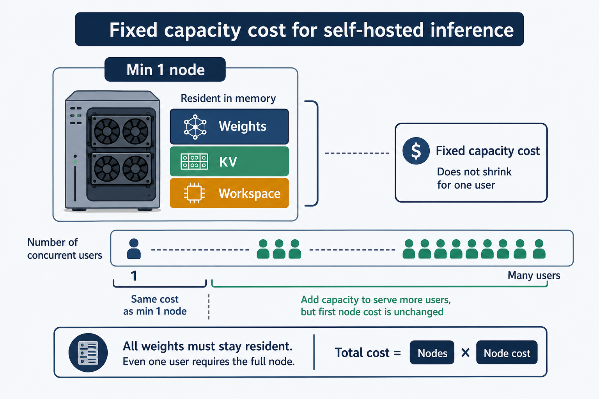
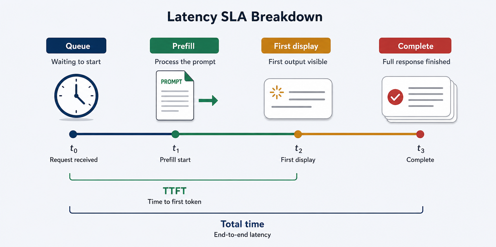
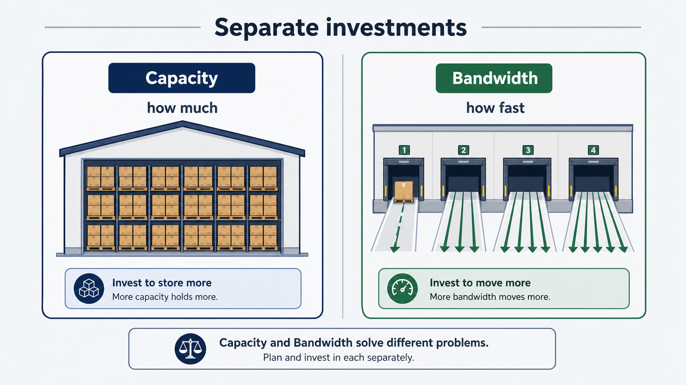
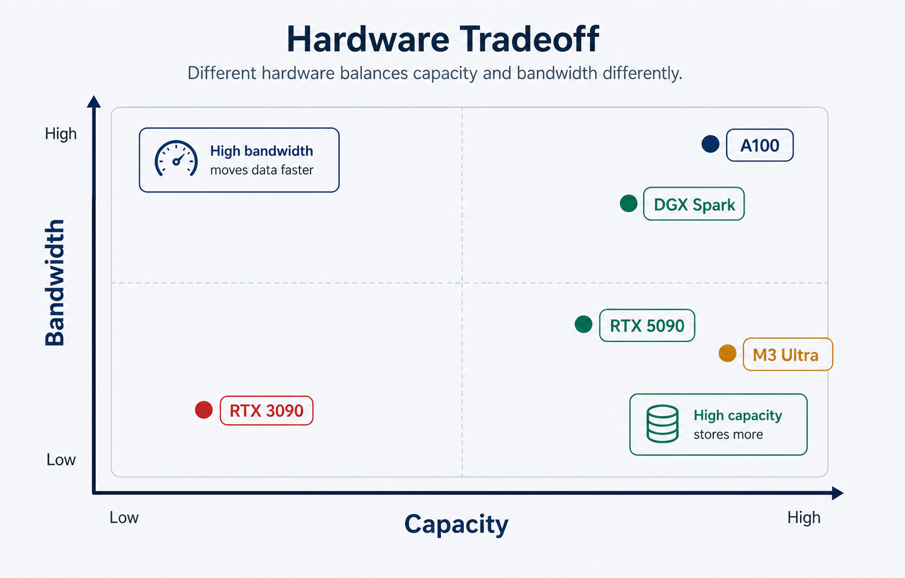
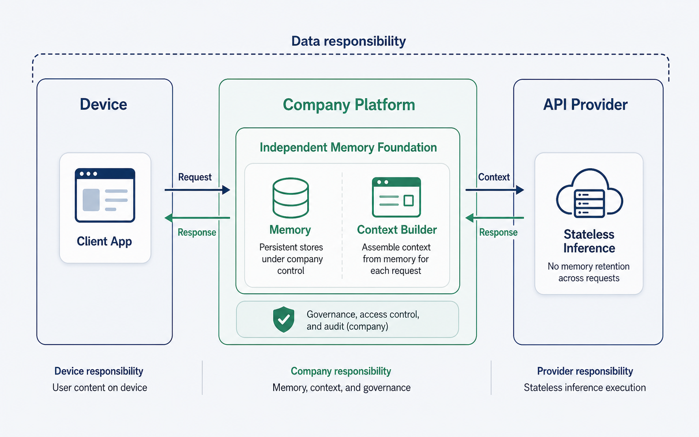
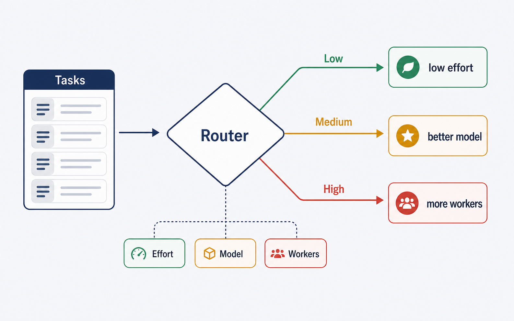
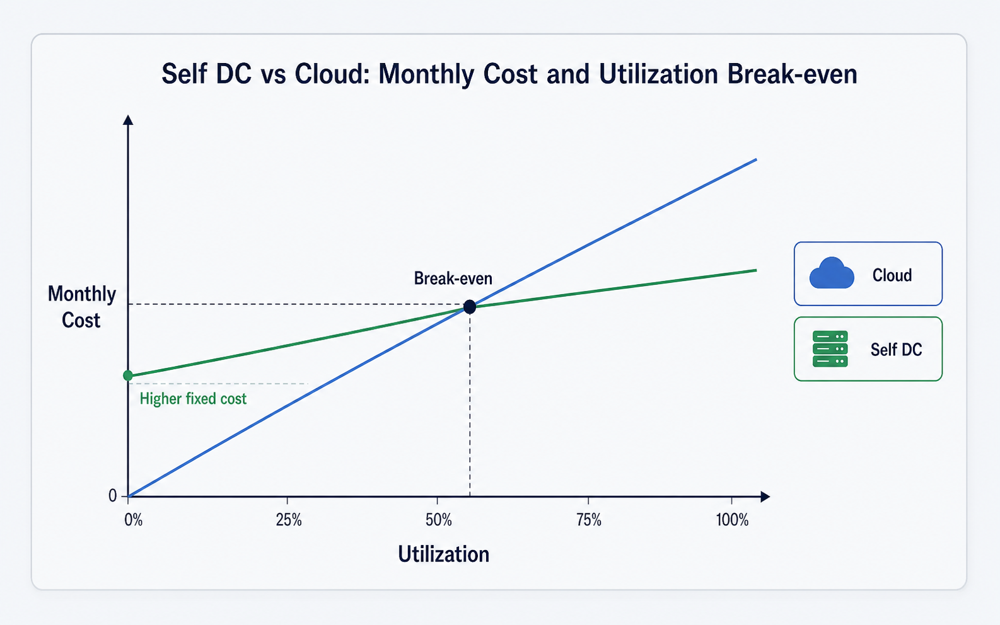
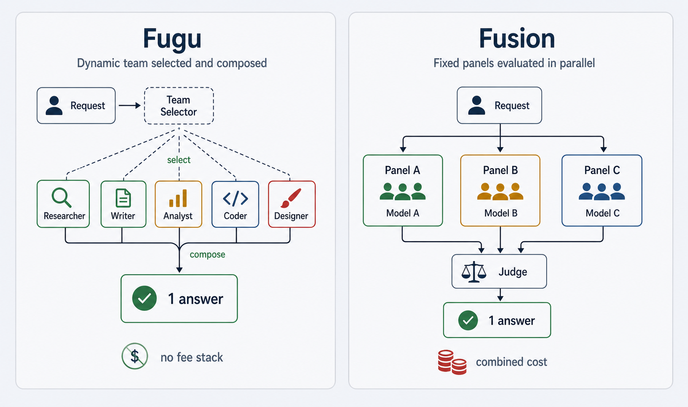
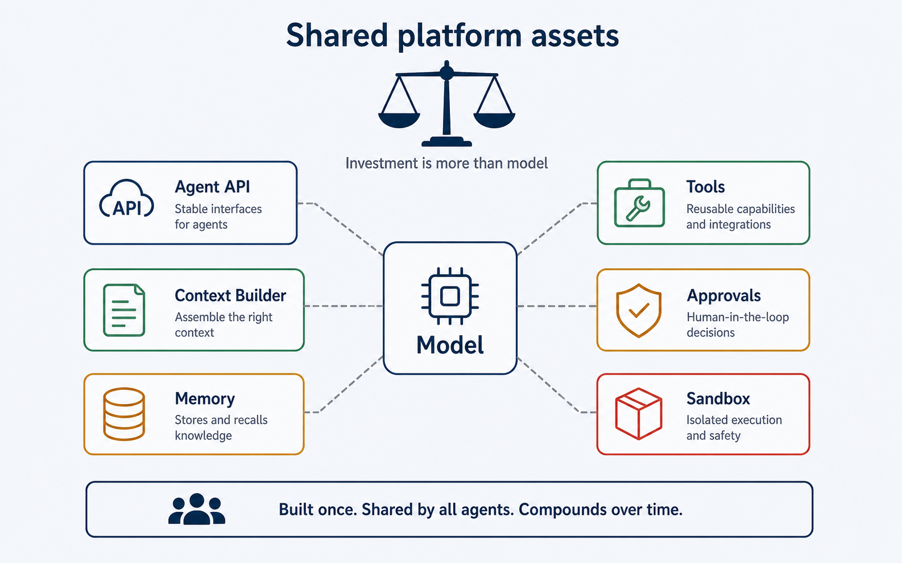

載るか ＝ 容量という固定費
容量は固定費を決めるモデル本体と量子化
モデル選定の第一条件は、性能評価より先に「必要なメモリへ安全に載るか」を確認すること。
モデルの重み容量は概算で「パラメータ数 × 量子化ビット数 ÷ 8」で決まります。32Bは16bitで約64GB、4bitで約16GB、70Bはそれぞれ約140GB・35GB、753Bは4bitでも約376.5GBです。これは重みだけの理論値で、実際には量子化情報・作業領域・通信バッファ・Activation・断片化の余裕が加わります。したがって「理論35GBだから40GB GPUで運用できる」という判断は危険です。量子化は設備費を抑える手段ですが、無条件に速度や業務品質を改善するものではなく、重みを4bitにしてもKVキャッシュまで自動で4bitになるわけではありません。量子化方式は調達の前提として固定せず、対象業務の成功率・速度・同時利用数を同条件で測ってから決めるべきです。
MoEは計算費を抑えても保管費を消さないDense と MoE
MoEは「容量削減策」ではなく、「大きな能力を、トークン当たり演算量を抑えて使う設計」。
Denseは原則全パラメータが各トークンの計算に使われます。MoEでは、総パラメータ数が格納容量に、Active parametersが各トークンの演算量に関係します。GLM系では約40B相当だけを各トークンで使う構成でも、格納には753B分の重みが必要です。演算量が40Bモデルに近く見えても、設備容量は753Bとして準備し、複数GPUへ分散すればExpert間通信や負荷の偏りも加わるため、Dense 40Bと同じ速度にもなりません。調達計画では総パラメータを、性能計画ではActive parametersとGPU間通信を別々に評価します。
長いコンテキストは無料の余白ではないコンテキストとKVキャッシュ
公称コンテキスト長は製品の上限値であり、そのまま日常運用の標準値にしない。
コンテキストには指示・ツール定義・履歴・要約・RAG文書・長期記憶・入力・ツール結果・出力・Reasoningまで含まれ、入力だけで上限を使い切ることはできません。運用では、公称（Advertised）／推論基盤の設定（Serving）／業務アプリが認める上限（Application）を分けます。1M対応でも「常に1Mを渡せる」「100人が同時に1Mを使える」を意味しません。KVキャッシュはリクエストごとの作業メモリで、同時利用数と会話長に比例します。Qwen3-32B（BF16）は8Kで約2GiB、32Kで約8GiB。32Kが10本同時なら約80GiB。GLM-5.2の圧縮方式でも1Mは1シーケンスのコアだけで約87.75GiB。容量計画は登録ユーザー数ではなく、ピーク時に同時生成されるシーケンス数と平均トークン長で行います。

速さ ＝ 体感とSLA
速さはSLAとして定義するtok/secを待ち時間へ翻訳する
tok/secは技術指標ではなく、利用者が何秒待つかを決めるサービス指標。
| 速度 | トークン間 | 600トークン生成(Decodeのみ) |
|---|---|---|
| 7 tok/s | 約143ms | 約85.6秒 |
| 25 tok/s | 40ms | 約24秒 |
| 50 tok/s | 20ms | 約12秒 |
| 100 tok/s | 10ms | 約6秒 |
この前にQueue待ちとPrefillが加わるため、実応答時間はさらに延びます。「50 tok/sを達成」だけでは不十分で、想定出力長を掛けて業務上許容できる秒数へ翻訳します。対話型・文書生成・長時間エージェントを同じ速度基準で扱わず、用途ごとに「最初の表示までの時間」と「完了までの時間」を別々のSLAとして定義します。

全体処理量は個人の体感を保証しないPrefillとDecode／Aggregate
長い入力を読む時間（Prefill）と、回答を一語ずつ生成する時間（Decode）は別管理です。長文資料を毎回入力するシステムはPrefillが、短い入力から長い分析を出すシステムはDecodeが遅くなります。改善の投資先も一律ではなく、Prefillなら履歴圧縮・文書選別・Prompt Cache、Decodeならモデル規模・量子化・帯域・Reasoning量を見直します。また、サーバー全体のtok/sが高くても各利用者が速いとは限りません。10人×25 tok/sで全体250 tok/sでも、長いコンテキストの混在やQueueで均等配分は保証されません。意思決定者はピーク時の全体処理量に加え、各利用者の最初の表示・完了・同時実行時の速度低下を確認すべきです。
容量と速度は別の投資
- GPU調達ではFLOPSだけでなく、実効帯域も確認します。
- 量子化やKV圧縮で、転送量を減らせるかも見ます。
- continuous batchingは全体のスループットを高めます。
- 各ユーザーのtok/sは、別の指標として確認します。
参考: Qiita「なぜLLMは遅いのか？ KV CacheとSpeculative Decodingの数学的理解」
メモリ帯域という制約容量と速度を分けて調達要件にする
モデルが載ることと、実用的な速度で動くことは別問題。
容量はモデル・KV・作業領域を保持できるかを決め、特にBatch 1のDecodeでは、毎トークン読み出す重みやKVに対しメモリ帯域が足りるかが速度を左右します。短いコンテキストのDenseなら理論速度は「実効帯域÷重み容量」、長いコンテキストでは分母にKV読み出しが加わります。これは予測値ではなく帯域から見た上限ですが、「容量は大きいが帯域が低い機器」と「容量は小さいが帯域が高い機器」を分ける初期スクリーニングに有効です。経営上の含意は、総演算性能や宣伝FLOPSだけで購入判断しないこと。調達要件にメモリ容量とメモリ帯域を別項目として明示します。

理論値は候補選定、購入承認は実測RooflineとBenchmark
帯域から求めたtok/sは候補を絞る天井値であり、予算承認の最終値ではありません。実速度には演算性能・実効帯域・GPU間通信・Kernel起動・量子化解除・Runtime実装が影響し、MoEではExpert routingやAll-to-All通信も加わります。2026年5月の研究例では、7〜8B BF16でL4が解析上限の約81%に達した一方、H100は約27%、H100はCUDA Graphsで約1.26倍改善という報告があり、高速GPUほど固定オーバーヘッドの影響が相対的に大きくなり得ます。INT4も量子化しただけで所定倍率で速くなるとは限りません。購入承認は、モデル・量子化・Runtime・コンテキスト長・出力長・同時実行数を固定した実ワークロードのキャパシティ試験を条件にします。
ハードウェア選定の判断
最大値ではなくボトルネックで選ぶ容量×帯域のトレードオフ
選定の起点は製品名ではなく、「どの量子化のモデルを・どのコンテキスト長で・何本同時に・何秒の待ち時間で」。
| 機器 | 容量 | 帯域 | 性格 |
|---|---|---|---|
| RTX 5090 | 32 GB | 1,792 GB/s | 高速だが容量制約が先に来る |
| RTX 3090 | 24 GB | 936 GB/s | 小規模・限定的同時実行向け |
| A100 80GB SXM | 80 GB | 2,039 GB/s | 容量と帯域のバランス（共有基盤向け） |
| DGX Spark | 128 GB | 273 GB/s | 大容量・載ること優先（Decodeは制約） |
| Mac Studio M3 Ultra | 512 GB | 819 GB/s | 超大容量・速度は中間 |
32B 4bitの帯域上の天井値はRTX 5090で約112 tok/s、RTX 3090で約58.5 tok/s。ただし32Kコンテキストでは重み16GB＋KV約8GiB超でRTX 3090は容量不足、RTX 5090も残り約7GBで同時シーケンスが制限されます。70B 4bit（理論35GB）の天井値はA100 SXMで約58.3、DGX Sparkで約7.8、Mac Studio M3 Ultraで約23.4 tok/s。DGX Sparkは70Bを載せられても、帯域がBatch 1 Decodeの制約になり得ます。理論値

標準構成と運用責任
モデルサーバーと状態管理を分離するローカルAIのテンプレート
ステートレスな推論サーバーと、独立した会話・記憶基盤を組み合わせる。
要求をConversation/Agent APIが受け、Raw Event Store・Session Store・Structured Memory・Semantic Index・Artifact Storeへ分離し、Context Builderが必要な情報だけを選んで推論サーバー（vLLM/SGLang/TensorRT-LLM）へ渡します。経営上の利点は、モデル更新と業務データのライフサイクルを切り離せること。モデルを交換しても会話記録や案件情報を保持でき、データの削除・保存期間をモデル更新と独立に管理できます。

記憶 ＝ データ統制と責任分界
記憶はモデル機能ではなくデータ統制クローズドAPIの裏側
「会話記憶があるか」ではなく、「どの状態を誰が管理し、どの期間保存するか」を確認事項にする。
会話を覚えているように見えても、通常はモデル重みが更新されているのではなく、保存履歴を次のリクエストで取得して再投入しているだけです。記憶設計はモデル選定よりも、状態の保存先と取得方法の設計です。
| 提供者 | つなぎ方 | 保持・主体 |
|---|---|---|
| OpenAI | previous_response_id / Conversations API | Responseは30日／Conversation項目はTTL対象外 |
| previous_interaction_id | 有料55日／無料1日 | |
| Anthropic | 毎回履歴送信（ステートレス） | 保存先は原則開発者側 |
この差はAPIの使い勝手だけでなく、保存場所・保持期間・削除責任・監査方法の差です。クローズドAPIでも契約・設計上の確認事項にします。
全履歴投入から段階的に卒業するナイーブ→要約→RAG→モダン
全履歴送信は単純ですが、会話が長いほど入力トークン・Prefill・KV・課金が増え、品質も落ち得ます。Rolling Summaryは効率的でも数値・期限・権限・原文の正確管理に弱く、RAG（Vector検索）だけで部署・本番リージョン・契約終了日などの確定情報を管理すべきではありません。モダンな構成は、最新会話・要約・構造化記憶・Semantic Retrieval・現在のタスク状態を組み合わせます。経営上の要点は、コンテキスト上限を増やすことより、必要情報を選び正しい形式で渡すContext Builderへ投資することです。保存時はMemory Writerが、将来必要か・事実か推測か・有効期限・所有者・機密区分・根拠メッセージを判定し、検証後にDBへ反映します。
Reasoning ＝ ルーティング変数
品質向上機能ではなくルーティング変数見えない生成コスト
Reasoningは「ONで品質が上がる」一方向の話ではなく、必要な仕事へ選択的に割り当てる計算資源。
画面に表示されなくてもReasoning tokensは通常のDecodeで生成され、時間・コンテキスト・KV・課金・同時実行能力を消費します。公式の単一例では、OpenAIはReasoning 1,024に対し表示出力約162、Geminiはthought 297に対し表示171。50 tok/sなら、OpenAI例は表示だけ約3.24秒がReasoning込み約23.72秒になります。Qwen3-32B相当・表示500・50 tok/sでReasoning 4,096を足すと、完了約1分32秒・追加KV 1GiB。10人同時なら約10GiBを占有します。Reasoningポリシーは品質設定であると同時にキャパシティ設定です。

Effortは固定数ではない／安価な経路から段階強化動的ルーティング
Low/Medium/Highは固定トークン上限ではなく、Reasoning量の分布を変える指示です。2026年のAres研究（gpt-oss-20b／TAU-Bench Retail）では、常時Low 35.0%・25K、常時High 54.8%・1,007K、動的選択 58.5%・476K。この特定評価では、High固定はLowの約40倍のトークンを使い、動的選択はトークンを削減しつつ成功率を維持または改善しました（一般則ではない）。
| タスク | 初期Reasoning方針 |
|---|---|
| 分類・検索・定型回答 | OFF / None / Minimal |
| 通常チャット・要約 | Low |
| コード生成・資料作成 | Medium |
| 複雑なデバッグ・設計・経営分析 | High |
GLM-5.2 / Kimi-2.7 / Opus-4.8 と「自前 vs API」
性能順位ではなく用途と提供形態で選ぶ三モデルの位置づけ
| 項目 | GLM-5.2 | Kimi K2.7-Code | Opus 4.8 |
|---|---|---|---|
| 規模/形態 | 753B MoE・公開(MIT) | 約1T MoE・公開(改変MIT) | 非公開・API専用 |
| コンテキスト | 1M | 256K | 既定1M（出力128K） |
| 傾向 非公式 | 計画・ワンショット生成 | 自律的コーディング/バグ修正 | 最難問の性能上限とされる |
第三者ベンチの順位より、セルフホスト可否・対象業務・コンテキスト・ライセンスを先に見ます。Z.aiは公式ベンチを伴わず出荷しており、出回る数値を確定的な調達根拠にすべきではありません。Opus 4.8はクローズドでセルフホスト不可、内部仕様は非公開です。
Active parametersではなく全重みを載せるセルフホスト構成の前提（推定）
MoEで各トークンに使うExpertが一部でも、全Expertを常駐させる必要があります。低同時実行でもGPUを減らせるとは限りません。費用を下げる手段は主に量子化・停止運用・共有利用で、利用者数に比例してGPU数は減りません。
| モデル | 4bit(推定) | FP8(推定) |
|---|---|---|
| GLM-5.2 | ~470GB／H100×6（1ノード） | ~941GB／H100×12（2ノード） |
| Kimi K2.7 | ~625GB／H100×8（1ノード） | ~1,250GB／H100×16（2ノード） |
推定 「パラメータ数 × 1パラメータ容量 × 1.2〜1.3倍」。KV・通信・レプリカ別途。
自前 vs API のコスト判断ユーザー1人 / 100人（2026年6月概算）
一人・低同時実行で24時間常駐させるなら、セルフホストは稼働率が低く、原則APIが有利。
| 8×H100ノード 推定 | 時間単価 | 月額/1ノード |
|---|---|---|
| AWS p5.48xlarge | $55〜98.3 | ~$4万〜7.2万 |
| GCP a3-highgpu-8g | ~$88 | ~$6.4万 |
| Azure ND H100 v5 | ~$98.3 | ~$7.2万 |
| 自社購入＋DC（3年償却） | — | ~$1.3万 |
| 100人・本番 推定 | 2ノード/月 | 3〜4ノード/月 |
|---|---|---|
| AWS | ~$8万〜14.4万 | ~$12万〜28.8万 |
| GCP | ~$12.8万 | ~$19.2万〜25.6万 |
| Azure | ~$14.4万 | ~$21.6万〜28.8万 |
| 自社購入(償却) | ~$2.5万〜2.6万 | — |
オンデマンド・月730h・GPUノード費のみ（ストレージ/転送/LB/監視/サポート別、要検証）。参考API: GLM-5.2ホスト型 ≈ 入力$1.40/出力$4.40 per1M（報道二次）、Opus 4.8 入力$5/出力$25（要確認）。

Fugu と Fusion ＝ 複数モデル活用
提供価値が異なる動的編成と固定パネル
Fuguは単一のファウンデーションモデルAPIとして振る舞い、自分で解くか専門チームを編成するかをクエリごとに判断し、動的scaffoldで一つの回答へ統合します。Fusionは複数モデルをパネルとして並列実行し、judgeがマージせず合意・矛盾・盲点を構造化JSONで返します（固定の「パネル並列＋judge」、モデルはOpenRouter上の他社製）。Fuguは回答生成を委譲したい場合、Fusionは複数の見解を比較したい場合に向き、どちらも単一モデルよりコストとレイテンシが増えます。

費用と使い所／ポートフォリオ方針価値の高い局面へ限定する
| Fugu 公式 | 料金 |
|---|---|
| Standard / Pro(10×) / Max(20×) | 月$20 / $100 / $200 |
| Fugu Ultra 従量(/1M) | 入力$5 / 出力$30 / Cached$0.50 |
Fuguは複数エージェントを呼んでも最上位単価一本で扱い（下位プランのトークン上限は非開示・要検証）、委譲の自動化・障害迂回・費用一本化に向きます。Fusionは「Fusion自体は0ドル/M」でも、パネル各モデル＋judgeを合算するため、デフォルト3モデルで単発の約4〜5倍。高リスクな経営判断・設計レビュー・検証など、異論を監査可能な形で残したい処理に限定起動するのが適切です。
LLMは部品、主役はハーネス
投資対象の再定義業務を動かすのはハーネス
モデルの更新だけをAI投資と捉えると、業務成果を決める制御層への投資が不足する。
LLM単体は入力から次トークンを生成するステートレスな部品で、自律的な業務システムを完成させません。Codex CLIやClaude Codeのようなハーネスが、エージェントループ（コンテキスト送信→ツール呼び出し実行→結果を次へ）、ツール定義と実行、System指示・AGENTS.md/CLAUDE.md・履歴・ツール出力の組み立て、自動実行/人間承認の判断、OSサンドボックスを担います。成果物の品質・作業範囲・実行可能な操作・失敗時の停止条件は、モデル能力だけでなくハーネス設計で決まります。

権限とサンドボックスはモデルへ委任しないCodex CLIとClaude Code
安全性は「危険な操作をしないで」と依頼するだけでは確保できません。公式にも、権限ルールを強制するのはモデルではなくClaude Code側だとされています。承認は「実行してよいか」を、サンドボックスは「実行できる範囲」をOSレベルで制限し、両者は別レイヤーです。Codex CLIはread-only / workspace-write（既定・ネット無効）/ danger-full-access のサンドボックスと、untrusted / on-request / on-failure / never の承認モードを持ちます（実装はmacOS=Seatbelt、Linux/WSL2=bubblewrap）。Claude Codeも allow/ask/deny の階層と default/acceptEdits/plan/auto/dontAsk/bypassPermissions のモードを持ちます。どのモデルを採用するかと同じ水準で、既定の権限・承認が必要な操作・ネットワーク接続・書き込み範囲を決める必要があります。
サーバー側状態はハーネスを置き換えない／モデル予算だけでROIを評価しない責任分界と投資配分の原則
OpenAI Responses APIは任意にステートフルにでき（store=true既定・30日保持、previous_response_idで文脈接続、ただし過去入力も課金）、Anthropic Messages APIはステートレスです。これは履歴の転送方法と保存主体の違いであり、作業ディレクトリ・編集ファイル・指示ファイル・権限・サンドボックス・ツール実行・エージェントループはクライアント側ハーネスが担います。サーバー側状態は履歴再送の一部を置き換えますが、ハーネスそのものは置き換えません。責任分界を曖昧にすると、どのデータが端末・社内基盤・API事業者に残るかを把握できなくなります。